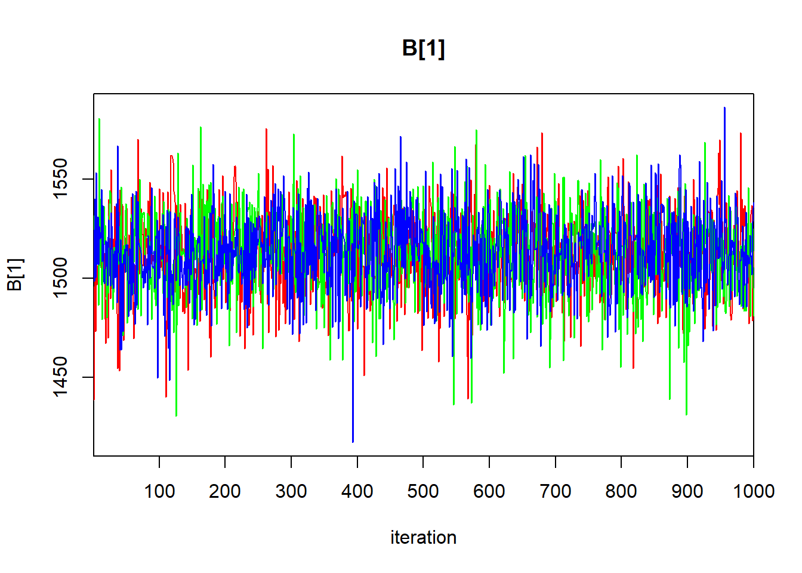
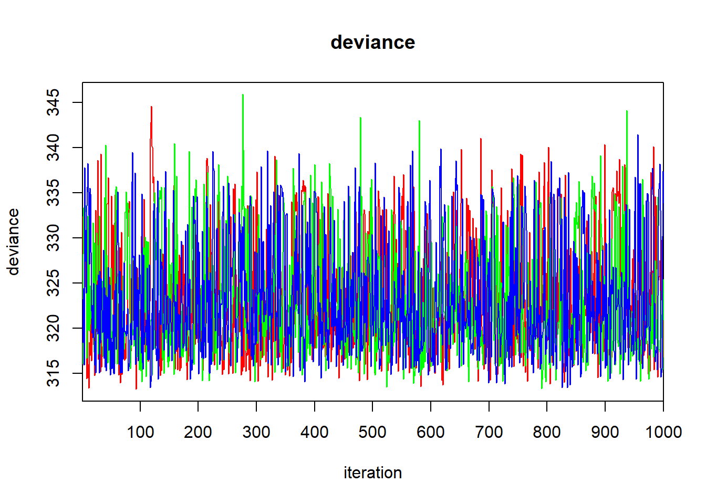
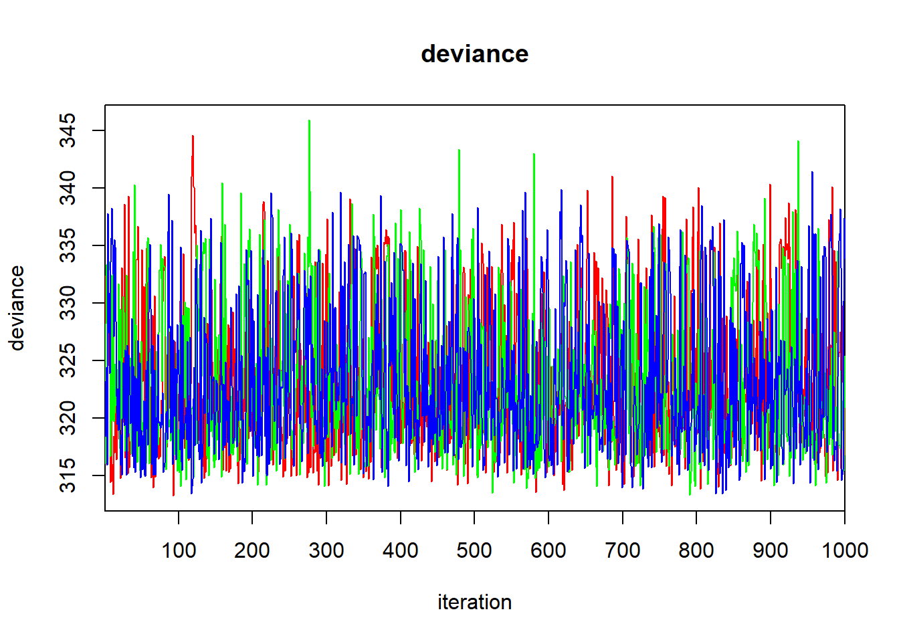
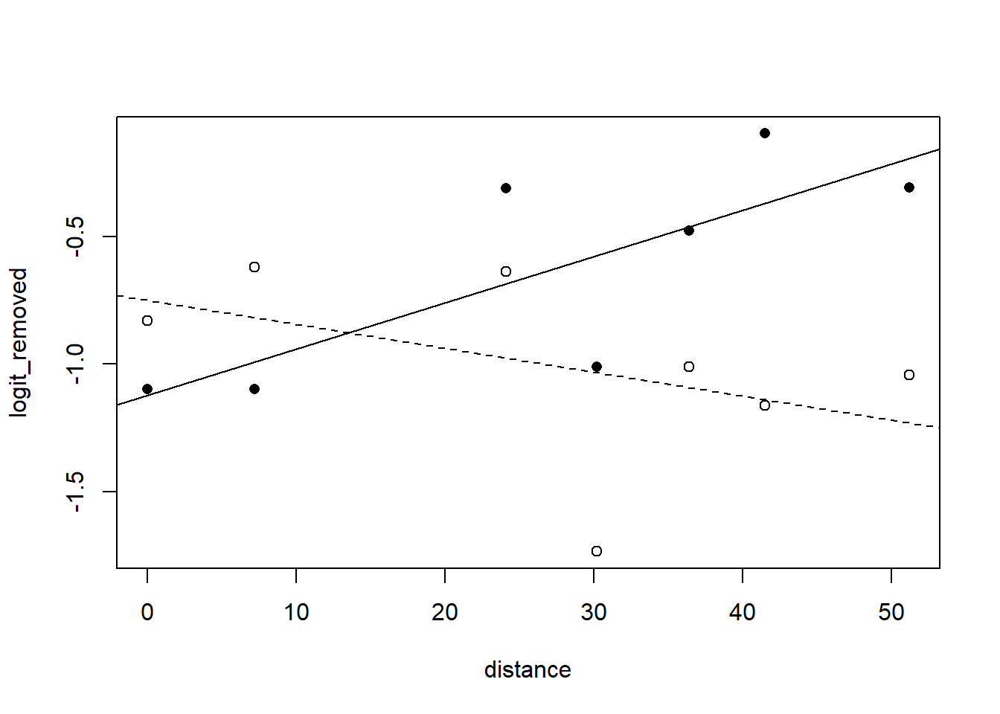
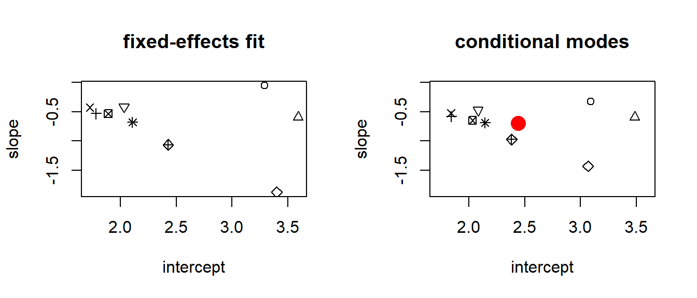

Chapter 6 Hierarchical (mixed) models
6.1 One-factor layout: Dyestuff data
6.1.1 Comparing fixed vs. random effects
We will illustrate the basic ideas of hierarchical models with the Dyestuff data contained in lme4. According to Bates (2012+), these data originally appeared in Davies (1947), and “are described in Davies and Goldsmith (1972, Table 6.3, p. 131) … as coming from ‘an investigation to find out how much the variation from batch to batch in the quality of an intermediate product contributes to the variation in the yield of the dyestuff made from it’”. The data consist of 6 batches, each of which gives rise to 5 observations.
Preparatory work:
## Loading required package: lme4## Loading required package: Matrix## Batch Yield
## A:5 Min. :1440
## B:5 1st Qu.:1469
## C:5 Median :1530
## D:5 Mean :1528
## E:5 3rd Qu.:1575
## F:5 Max. :1635To develop some notation, let \(i = 1, \ldots, 6\) index the batches, let \(j = 1, \ldots, 5\) index the observations within each batch, and let \(y_{ij}\) denote observation \(j\) from batch \(i\).
We will use nlme::gls to fit a model that assumes that the data within each batch are correlated. In other words, we fit the model
\[\begin{align}
y_{ij} & \sim \mathcal{N}(\mu_i, \sigma^2) \\
\mathrm{Corr}(y_{ij}, y_{ik}) & = \rho
\end{align}\]
## Loading required package: nlme##
## Attaching package: 'nlme'## The following object is masked from 'package:lme4':
##
## lmList## Generalized least squares fit by REML
## Model: Yield ~ 1
## Data: Dyestuff
## AIC BIC logLik
## 325.6543 329.7562 -159.8271
##
## Correlation Structure: Compound symmetry
## Formula: ~1 | Batch
## Parameter estimate(s):
## Rho
## 0.4184874
##
## Coefficients:
## Value Std.Error t-value p-value
## (Intercept) 1527.5 19.38341 78.80449 0
##
## Standardized residuals:
## Min Q1 Med Q3 Max
## -1.34770180 -0.90488550 0.03850577 0.73160955 1.65574793
##
## Residual standard error: 64.92534
## Degrees of freedom: 30 total; 29 residualThe most salient components of this output are the estimate of the overall mean, and the estimate of the within-batch correlation (\(\hat{\rho} = 0.42\)).
Now we will fit a random-effects, or variance-components, model that includes a random effect for the batch. We can write the model as \[\begin{align} y_{ij} & \sim \mathcal{N}(B_i, \sigma_\varepsilon^2) \\ B_i & \stackrel{\text{iid}}{\sim} \mathcal{N}(\mu, \sigma_B^2). \end{align}\]
## Linear mixed model fit by REML ['lmerMod']
## Formula: Yield ~ 1 + (1 | Batch)
## Data: Dyestuff
##
## REML criterion at convergence: 319.7
##
## Scaled residuals:
## Min 1Q Median 3Q Max
## -1.4117 -0.7634 0.1418 0.7792 1.8296
##
## Random effects:
## Groups Name Variance Std.Dev.
## Batch (Intercept) 1764 42.00
## Residual 2451 49.51
## Number of obs: 30, groups: Batch, 6
##
## Fixed effects:
## Estimate Std. Error t value
## (Intercept) 1527.50 19.38 78.8The estimate of the overall mean is the same as it is in the GLS fit. Note also that we can recover the estimate of the within-batch correlation from the estimates of the variances of the random effects:
## [1] 0.4185053To obtain the conditional modes (BLUPs) of the batch-level random effect, we can use the command ranef:
## $Batch
## (Intercept)
## A -17.6068514
## B 0.3912634
## C 28.5622256
## D -23.0845385
## E 56.7331877
## F -44.9952868
##
## with conditional variances for "Batch"The conditional modes given here correspond to the differences between the mean for each batch and the overall mean (\(\mu\)). To convert these to best guesses for the mean of each batch, we have to the overall mean back. This can be done by using the command fixef to extract the lone fixed-effect estimate from the model:
## [1] 1509.893 1527.891 1556.062 1504.415 1584.233 1482.505It is informative to compare the conditional models for each batch to the sample means. We can calculate the sample means with the tapply function
## A B C D E F
## 1505 1528 1564 1498 1600 1470Now plot the sample means against the conditional modes:
plot(x = batch.means,
y = batch.conditional.modes,
xlim = range(batch.means),
ylim = range(batch.means),
xlab = "sample means",
ylab = "conditional modes",
pch = LETTERS[1:6])
abline(a = 0, b = 1)
The conditional modes are “shrunken” towards the global mean relative to the sample means. Why is this so?
To conduct inferences about the parameters in the hierarchical model, lme4::lmer offers likelihood profiling. This is the same idea that we encountered when we were using the likelihood to calculate profile-based confidence intervals earlier in the course. lme4::lmer does all its profiling on the ML fit, so we begin by refitting our hierarchical model using ML. To do so, set the optional argument REML to FALSE.
## Linear mixed model fit by maximum likelihood ['lmerMod']
## Formula: Yield ~ 1 + (1 | Batch)
## Data: Dyestuff
##
## AIC BIC logLik -2*log(L) df.resid
## 333.3 337.5 -163.7 327.3 27
##
## Scaled residuals:
## Min 1Q Median 3Q Max
## -1.4315 -0.7972 0.1480 0.7721 1.8037
##
## Random effects:
## Groups Name Variance Std.Dev.
## Batch (Intercept) 1388 37.26
## Residual 2451 49.51
## Number of obs: 30, groups: Batch, 6
##
## Fixed effects:
## Estimate Std. Error t value
## (Intercept) 1527.50 17.69 86.33Switching to ML has decreased our estimate of the batch-level variance, and decreased it by quite a bit. To construct profile-based intervals, we use the lme4::profile function.7 We will use the xyplot function from the lattice package to display the profiles.

There are three panels here, one for each of the parameters in the model. These parameters are labeled as \(\sigma_1\) for the standard deviation of the block-level random effect (what we have written \(\sigma_B\)), \(\sigma\) for the standard deviation of the errors (what we have written as \(\sigma_\varepsilon\)), and “(Intercept)” for the global mean (what we have written as \(\mu\)).
Within each panel, the values plotted on the vertical axis are the signed square roots of the likelihood ratio test statistic. This value is denoted by the Greek letter \(\zeta\) (“zeta”); hence, the plots we are viewing are called zeta-plots.
I do not know how widely used zeta-plots are. They may be more common in other realms of science, although I have never encountered them outside lme4. Basically, they are a visualization of profile-likelihood based confidence intervals. The vertical lines in each panel give the limits of (working from the inside out) 50%, 80%, 90%, 95%, and 99% confidence intervals for each parameter. We can also extract these confidence limits using the confint function. Below, we show 95% confidence intervals; of course, one can change the confidence level as needed.
## 2.5 % 97.5 %
## .sig01 12.19854 84.06305
## .sigma 38.22998 67.65770
## (Intercept) 1486.45150 1568.54849So, a 95% confidence interval for \(\mu\) ranges from 1486 to 1569.
Here is a bit more about the logic behind zeta plots (feel free to skip this paragraph if you wish). Recall that negative log-likelihood profiles are convex and approximately quadratic. Plotting the LRT statistic instead of the likelihood itself has the effect of placing the nadir of these curves at 0, instead of at the value of the negative log-likelihood. Taking the square root of the LRT statistic converts a quadratic curve (a u-shape) into a linear one (a v-shape). We can see this v-shape by using the optional argument absVal = TRUE:

The purpose of using a signed square root is to turn the U-shaped plots of profile likelihoods into V-shaped plots. Some might argue that V-shaped plots are useful because it makes it easier to detect the asymmetries between the left and right halves of the plot.
(Start reading again if you skipped the above detail). There is an interesting detail to the zeta-plots. Consider the zeta-plot for \(\sigma_1\) (the standard deviation of the batch-level random effects), and try to find the lower limit of a 99% confidence interval. You’ll notice that the zeta-plot hits 0 (the lowest possible value for a standard deviation) before the interval is completed. Thus, the lower limit of this interval is 0:
## 0.5 % 99.5 %
## .sig01 0.00000 113.68769
## .sigma 35.56317 75.66803
## (Intercept) 1465.87401 1589.12602Although we are not much in the habit of conducting hypothesis tests in this course, we would conclude that we would fail to reject the null hypothesis that the batch-level variance equals 0 with a 99% level test.
We can also obtain bivariate confidence regions from the profile likelihood using the lattice::splom command.
 Panels above the diagonal show bivariate, profile-based confidence regions for each pair of parameters. Within each panel, we see 50%, 80%, 90%, 95%, and 99% confidence regions. The panels show, for example, that the estimate of the observation-level standard deviation is slightly negatively correlated with the estimate of the batch-level standard deviation. Panels below the diagonal show the same plots on the \(\zeta\) scale. See Bates (2012+) 1.5.3 for a detailed description of how to interpret these plots.
Panels above the diagonal show bivariate, profile-based confidence regions for each pair of parameters. Within each panel, we see 50%, 80%, 90%, 95%, and 99% confidence regions. The panels show, for example, that the estimate of the observation-level standard deviation is slightly negatively correlated with the estimate of the batch-level standard deviation. Panels below the diagonal show the same plots on the \(\zeta\) scale. See Bates (2012+) 1.5.3 for a detailed description of how to interpret these plots.
There is a second approach to calculating confidence intervals and/or conducting hypothesis tests for fixed-effect parameters. Famously, lme4::lmer does not provide degrees of freedom for the estimates of the fixed effects. The package lmerTest uses the Satterthwaite approximation to estimate these df.
## Loading required package: lmerTest##
## Attaching package: 'lmerTest'## The following object is masked from 'package:lme4':
##
## lmer## The following object is masked from 'package:stats':
##
## step## Linear mixed model fit by REML. t-tests use Satterthwaite's method [
## lmerModLmerTest]
## Formula: Yield ~ 1 + (1 | Batch)
## Data: Dyestuff
##
## REML criterion at convergence: 319.7
##
## Scaled residuals:
## Min 1Q Median 3Q Max
## -1.4117 -0.7634 0.1418 0.7792 1.8296
##
## Random effects:
## Groups Name Variance Std.Dev.
## Batch (Intercept) 1764 42.00
## Residual 2451 49.51
## Number of obs: 30, groups: Batch, 6
##
## Fixed effects:
## Estimate Std. Error df t value Pr(>|t|)
## (Intercept) 1527.50 19.38 5.00 78.8 6.23e-09 ***
## ---
## Signif. codes: 0 '***' 0.001 '**' 0.01 '*' 0.05 '.' 0.1 ' ' 1lmerTest::lmer gives the associated df for the estimate of the intercept as 5. If this were a class in experimental design, we would regard the individual measurements from each batch as subsamples, in which case the correct df for inferences about the intercept should be \(6 - 1 = 5\). In this case, the calculation from lmerTest::lmer matches our intuition.
Equipped with this information, we could construct a 95% confidence interval for the overall mean as
## [1] 1477.682 1577.318Compare this interval with the profile interval generated by lme4::profile.
Finally, we can also obtain prediction intervals on the conditional modes of the random effects by using the condVar = TRUE option in a call to ranef. We illustrate below, and direct the output to lattice::dotplot for visualization. Each line below shows a 95% prediction interval for a conditional mode. When there are many levels of the random effect, Bates (2012+) recommends using lattice::qqmath instead of lattice::dotplot.
## $Batch6.1.2 Bayesian analysis
The variance-components model is our first encounter with a hierarchical model. One often hears the phrase “Bayesian hierarchical model” in ecology. It is important to realize that not all Bayesian models are hierarchical, and not all hierarchical models are Bayesian. Indeed, we have seen examples of both: none of the Bayesian examples that we have seen in earlier chapters were hierarchical, and the mixed-model analysis of the Dyestuff data is a hierarchical model analyzed from a frequentist perspective. However, we can certainly analyze hierarchical models from a Bayesian perspective as well, leading to a Bayesian hierarchical model.
The above paragraph begs the question: What defines a hierarchical model? One can find definitions in the literature, though it isn’t clear to me that any of these definitions are fully precise, although I may just be ignorant. As best I can tell, a hierarchical model is one that includes so-called “latent” variables. Latent variables are unobservable quantities on which the data depend, that in turn are related to model parameters via a statistical model. This “layered” construction of the model (observables depend on latent variables, and latent variables depend on model parameters) gives rise to the “hierarchy” that gives hierarchical models their name.
This hierarchical perspective can be emphasized by how the model is written. For the dyestuff data, when we write \[\begin{align} y_{ij} & \sim \mathcal{N}(B_i, \sigma^2_\varepsilon) \\ B_i & \stackrel{\text{iid}}{\sim} \mathcal{N}(\mu, \sigma^2_B) \\ \end{align}\]
we emphasize that the distribution of the data depends in part on the latent variables \(B_i\), and the distribution of the latent variables depends in turn on some of the model parameters.
To complete the Bayesian specification, we need to place priors on our three parameters: \(\mu\), \(\sigma^2_B\), and \(\sigma^2_\varepsilon\). In the absence of any information, we might choose a vague normal prior for \(\mu\), and vague gamma priors for \(1/\sigma^2_B\) and \(1/\sigma^2_\varepsilon\). The following R2Jags code implements such a model.
## Loading required package: R2jags## Loading required package: rjags## Loading required package: coda## Linked to JAGS 4.3.1## Loaded modules: basemod,bugs##
## Attaching package: 'R2jags'## The following object is masked from 'package:coda':
##
## traceplotdyestuff.model <- function() {
## likelihood
for (j in 1:J) {
y[j] ~ dnorm(B[batch[j]], tau_eps) # data distribution
}
## latent variables
for (b in 1:6){
B[b] ~ dnorm(mu, tauB)
}
mu ~ dnorm (0.0, 1E-6) # prior for the overall mean
tau_eps ~ dgamma(.01, .01) # ok here because these are precisions
tauB ~ dgamma(.01, .01)
sd_eps <- pow(tau_eps, -1/2)
sdB <- pow(tauB, -1/2)
}
jags.data <- list(y = Dyestuff$Yield,
batch = as.numeric(Dyestuff$Batch),
J = nrow(Dyestuff))
jags.params <- c("mu", "sd_eps", "sdB", "B[1]", "B[2]")
jags.inits <- function(){
list("mu" = rnorm(1, .01), "tauB" = dexp(1, 1), "tau_eps" = dexp(1, 1))
}
jagsfit <- jags(data = jags.data,
inits = jags.inits,
parameters.to.save = jags.params,
model.file = dyestuff.model,
n.chains = 3,
n.iter = 1e5,
jags.seed = 1)## module glm loadedThe code above requires a way to associate each observation with the batch from which the observation was drawn. We accomplish this by creating the variable batch that associates each observation with the numerical index of the batch. (That is, batch “A” is associated with the index 1, etc.) In the code, this happens with the line
The as.numeric command returns numerical values for each level of the factor Batch.
Note also that we have only asked for the posterior draws for the latent means of the first two batches, \(B_1\) and \(B_2\). This is merely to keep the output small for this example. We could of course ask for the means of the other batches as well.
Let’s have a look at the output:
## Inference for Bugs model at "C:/Users/krgross/AppData/Local/Temp/RtmpSSij12/model20fc31927764", fit using jags,
## 3 chains, each with 1e+05 iterations (first 50000 discarded), n.thin = 50
## n.sims = 3000 iterations saved. Running time = 0.48 secs
## mu.vect sd.vect 2.5% 25% 50% 75% 97.5% Rhat
## B[1] 1513.631 20.231 1471.283 1499.935 1514.682 1527.592 1550.754 1.001
## B[2] 1527.720 19.488 1488.551 1515.797 1527.451 1539.246 1567.505 1.001
## mu 1526.379 21.314 1482.536 1514.950 1526.401 1538.284 1569.024 1.001
## sdB 38.868 26.648 0.243 21.745 36.584 52.500 99.655 1.001
## sd_eps 54.118 9.197 39.638 47.410 52.933 59.810 75.858 1.001
## deviance 323.634 6.366 315.031 318.496 322.035 328.214 336.401 1.001
## n.eff
## B[1] 3000
## B[2] 3000
## mu 3000
## sdB 3000
## sd_eps 3000
## deviance 3000
##
## For each parameter, n.eff is a crude measure of effective sample size,
## and Rhat is the potential scale reduction factor (at convergence, Rhat=1).
##
## DIC info (using the rule: pV = var(deviance)/2)
## pV = 20.3 and DIC = 343.9
## DIC is an estimate of expected predictive error (lower deviance is better). 



## Loading required package: lattice
One especially appealing aspect of analyzing this model from a Bayesian perspective is that there is no awkwardness in analyzing the posterior distributions of the latent variables, namely, the batch-specific means. From the frequentist perspective, it is somewhat awkward (though not prohibitively so) to define the conditional modes (BLUPs). We also lack straightforward methods for quantifying the uncertainty in these conditional modes. From the Bayesian viewpoint, this awkwardness disappears, because the distinction between model parameters and latent variables vanishes. Both are simply unobserved quantities. Consequently, it is natural to summarize our posterior knowledge about the latent variables by their (marginal) posterior distributions, in the same way that we use marginal posteriors to summarize our inferences about the model parameters.
6.1.3 Negative within-group correlations
The hierarchical model formulation, regardless of whether analyzed from a frequentist or Bayesian perspective, is just a model. All models are wrong, but some models are useful. One can encounter grouped data where the hierarchical formulation is not useful. To illustrate, we consider the Dyestuff2 data provided in lme4. These are synthetic (fake) data that have been created by Box and Tiao (1973) for the sake of illustration. The Dyestuff2 data have the same structure as the original Dyestuff data, that is, 5 observations from each of 6 batches.
## Batch Yield
## A:5 Min. :-0.892
## B:5 1st Qu.: 2.765
## C:5 Median : 5.365
## D:5 Mean : 5.666
## E:5 3rd Qu.: 8.151
## F:5 Max. :13.434
We’ll begin by fitting a GLS model that includes a within-batch correlation:
## Generalized least squares fit by REML
## Model: Yield ~ 1
## Data: Dyestuff2
## AIC BIC logLik
## 167.2092 171.3111 -80.60461
##
## Correlation Structure: Compound symmetry
## Formula: ~1 | Batch
## Parameter estimate(s):
## Rho
## -0.0970284
##
## Coefficients:
## Value Std.Error t-value p-value
## (Intercept) 5.6656 0.5271409 10.74779 0
##
## Standardized residuals:
## Min Q1 Med Q3 Max
## -1.77661357 -0.78584319 -0.08143986 0.67335540 2.10464878
##
## Residual standard error: 3.691067
## Degrees of freedom: 30 total; 29 residualNotice that the within-batch correlation is negative. What does this imply about the structure of the data?
Let’s have a look at a hierarchical model, fit with lmer.
## boundary (singular) fit: see help('isSingular')## Linear mixed model fit by REML ['lmerMod']
## Formula: Yield ~ 1 + (1 | Batch)
## Data: Dyestuff2
##
## REML criterion at convergence: 161.8
##
## Scaled residuals:
## Min 1Q Median 3Q Max
## -1.7648 -0.7806 -0.0809 0.6689 2.0907
##
## Random effects:
## Groups Name Variance Std.Dev.
## Batch (Intercept) 0.00 0.000
## Residual 13.81 3.716
## Number of obs: 30, groups: Batch, 6
##
## Fixed effects:
## Estimate Std. Error t value
## (Intercept) 5.6656 0.6784 8.352
## optimizer (nloptwrap) convergence code: 0 (OK)
## boundary (singular) fit: see help('isSingular')The estimate of the among-batch variance, \(\sigma^2_B\), is 0. The warning generated by R tells us that our fit is singular: one of the estimated parameters lies on the boundary of its possible values. To quote Bates (2012+) (using our notation):
“An estimate of 0 for \(\sigma_B\) does not mean that there is no variation between the groups. Indeed, … there is some small amount of variability between the groups. The estimate, \(\hat{\sigma}_B=0\), simply indicates that the level of ‘between-group’ variability is not sufficient to warrant incorporating random effects in the model.
“The important point … is that we must allow for the estimates of variance components to be zero. We describe such a model as being degenerate, in the sense that it corresponds to a linear model in which we have removed the randdom effects associated with Batch. Degenerate models can and do occur in practice. Eveen when the final fitted model is not degenerate, we must allow for such models when determining the parameter estimates through numerical optimization.”
Can you think of any ecological mechanisms that might give rise to negative within-group correlations?
6.2 Industrial melanism data
The data we analyze here come from a famous ecological study investigating predation on light and dark colored moths along an urban-rural transect outside of Liverpool, England. We will examine several approaches to analyzing these data. The original source for these data is Bishop (1972); I obtained them from Ramsey and Schafer (2002). These data consist of paired binomial responses with two covariates: distance from Liverpool (a station-level covariate) and color morph (an observation-level covariate).
Although simple, these data contain many features that complicate their analysis:
- Observations from the same location are (positively) correlated, presumably because the predation pressure varies from one location to the next.
- The responses are grouped binomial responses with varying group size (that is, varying numbers of moths placed on trees) at each location.
Accommodating both the non-independence (due to the pairing) and the non-normality of these data requires a more sophisticated approach that we will discuss later. Here, we will use the empirical logit of the proportion of moths removed to create a response variable that is close enough to normality to justify normal-based approaches. We will focus on using mixed models to accommodate the correlations among observations from the same location.
In notation, let \(i=1,2\) index the two color morphs, let \(j = 1, \ldots, 7\) index the locations, let \(y_{ij}\) give the number of moths removed, let \(n_{ij}\) give the number of moths placed, and let \(x_j\) give the distance of station \(j\) from Liverpool. Here, we will study the model \[ \mathrm{logit}(y_{ij} / n_{ij}) = a_i + b_i x_j + \varepsilon_{ij} \] which regresses the log odds of moth removal against distance from Liverpool, with different intercepts and slopes for each color morph. We are most interested in learning about the difference \(b_1 - b_2\), which quantifies how the relationship between log odds of removal and distance differs between the two color morphs, and determining whether there is evidence that this difference \(\neq 0\).
The issue at hand is that the observation-level errors—the \(\varepsilon_{ij}\)’s—from the same location are likely to be positively correlated.
Because there are only two observations per station (that is, the data are paired) one approach is simply to regress the difference of the empirical logits vs. distance. That is, if we define \(l_j = \mathrm{logit}(y_{1j} / n_{1j})\) as the log odds of removal for light moths at location \(j\), \(d_j = \mathrm{logit}(y_{2j} / n_{2j})\) as the log odds of removal for dark moths at location \(j\), and \(\delta_j = d_j - l_j\) as the difference in the log odds of removal between dark and light moths at location \(j\), then we can fit the model \[ \delta_j = a + b x_j + \varepsilon_j \] as a simple regression. We try this approach first and use it as a benchmark. The data set used here is reformatted to include one record for each of the 7 stations.
## location distance morph l.placed l.removed d.placed d.removed
## 1 sp 0.0 light 56 17 56 14
## 2 ef 7.2 light 80 28 80 20
## 3 ha 24.1 light 52 18 52 22elogit <- function(x) log(x / (1 - x))
moth2$elogit.diff <- with(moth2, elogit(d.removed / d.placed) - elogit(l.removed / l.placed))
fm1 <- lm(elogit.diff ~ distance, data = moth2)
with(moth2, plot(elogit.diff ~ distance,
xlab = "distance from city center (km)",
ylab = "difference in log odds of removal, dark - light"))
abline(h = 0, lty = "dashed")
abline(fm1)
##
## Call:
## lm(formula = elogit.diff ~ distance, data = moth2)
##
## Residuals:
## 1 2 3 4 5 6 7
## 0.10557 -0.30431 0.03501 0.26395 -0.09387 0.29714 -0.30349
##
## Coefficients:
## Estimate Std. Error t value Pr(>|t|)
## (Intercept) -0.373830 0.192503 -1.942 0.10980
## distance 0.027579 0.005997 4.599 0.00585 **
## ---
## Signif. codes: 0 '***' 0.001 '**' 0.01 '*' 0.05 '.' 0.1 ' ' 1
##
## Residual standard error: 0.2698 on 5 degrees of freedom
## Multiple R-squared: 0.8088, Adjusted R-squared: 0.7706
## F-statistic: 21.15 on 1 and 5 DF, p-value: 0.005846## 2.5 % 97.5 %
## (Intercept) -0.86867531 0.12101544
## distance 0.01216371 0.04299419While the model has answered our primary question, this approach is clearly limited to models with only two treatments. If there had been three or more moth morphs, simply taking differences would not have worked so nicely.
An alternative approach that would work just as well for three or more groups is to use a random effect to capture the differences among the locations. In notation, we will fit the model \[ \mathrm{logit}(y_{ij} / n_{ij}) = a_i + b_i x_j + L_j + \varepsilon_{ij} \] where \(L_j\sim \mathcal{N}(0, \sigma^2_L)\) are location-level random effects, and \(\varepsilon_{ij}\sim \mathcal{N}(0, \sigma^2_\varepsilon)\) are observation-level random effects. Here’s the fit.
moth <- read.table("data/moth.txt", head = TRUE, stringsAsFactors = TRUE)
moth$logit_removed <- with(moth, elogit(removed / placed))
mm1 <- lme4::lmer(logit_removed ~ distance * morph + (1 | location), data = moth)
summary(mm1)## Linear mixed model fit by REML ['lmerMod']
## Formula: logit_removed ~ distance * morph + (1 | location)
## Data: moth
##
## REML criterion at convergence: 22.6
##
## Scaled residuals:
## Min 1Q Median 3Q Max
## -1.2662 -0.5662 0.1830 0.4088 0.9045
##
## Random effects:
## Groups Name Variance Std.Dev.
## location (Intercept) 0.07639 0.2764
## Residual 0.03639 0.1907
## Number of obs: 14, groups: location, 7
##
## Fixed effects:
## Estimate Std. Error t value
## (Intercept) -1.123346 0.239648 -4.687
## distance 0.018190 0.007465 2.437
## morphlight 0.373830 0.192503 1.942
## distance:morphlight -0.027579 0.005997 -4.599
##
## Correlation of Fixed Effects:
## (Intr) distnc mrphlg
## distance -0.848
## morphlight -0.402 0.341
## dstnc:mrphl 0.341 -0.402 -0.848A visualization:
with(moth, plot(logit_removed ~ distance, type = "n"))
with(subset(moth, morph == "dark"), points(logit_removed ~ distance, pch = 16))
with(subset(moth, morph == "light"), points(logit_removed ~ distance, pch = 1))
abline(a = -1.1233, b = 0.01819) # dark fit
abline(a = -1.1233 + 0.3738, b = 0.01819 - 0.02758, lty = "dashed") # light fit
To test for the significance of the difference in slopes, we use lmerTest::lmer:
mm1a <- lmerTest::lmer(logit_removed ~ distance * morph + (1 | location), data = moth)
summary(mm1a)## Linear mixed model fit by REML. t-tests use Satterthwaite's method [
## lmerModLmerTest]
## Formula: logit_removed ~ distance * morph + (1 | location)
## Data: moth
##
## REML criterion at convergence: 22.6
##
## Scaled residuals:
## Min 1Q Median 3Q Max
## -1.2662 -0.5662 0.1830 0.4088 0.9045
##
## Random effects:
## Groups Name Variance Std.Dev.
## location (Intercept) 0.07639 0.2764
## Residual 0.03639 0.1907
## Number of obs: 14, groups: location, 7
##
## Fixed effects:
## Estimate Std. Error df t value Pr(>|t|)
## (Intercept) -1.123346 0.239648 6.854778 -4.687 0.00237 **
## distance 0.018190 0.007465 6.854778 2.437 0.04571 *
## morphlight 0.373830 0.192503 5.000000 1.942 0.10980
## distance:morphlight -0.027579 0.005997 5.000000 -4.599 0.00585 **
## ---
## Signif. codes: 0 '***' 0.001 '**' 0.01 '*' 0.05 '.' 0.1 ' ' 1
##
## Correlation of Fixed Effects:
## (Intr) distnc mrphlg
## distance -0.848
## morphlight -0.402 0.341
## dstnc:mrphl 0.341 -0.402 -0.848In this simple case, the df for the \(t\)-statistic associated with the difference in slopes is indisputable, and lmerTest::lmer returns the same \(p\)-value as the paired analysis.
For what it’s worth, we can also extract conditional modes for the random effects of each of the locations:
## $location
## (Intercept)
## cm 0.02991727
## ef 0.03709012
## ha 0.28858612
## ll 0.02644813
## lo -0.46001114
## pw 0.10062376
## sp -0.02265426
##
## with conditional variances for "location"6.3 Random coefficient models: RIKZ data
Random-coefficient models are those in which the random-effect for each group applies not just to the overall mean response from that group (the “intercept”) but to a parameter that characterizes a particular feature of the data from that group, such as a regression slope. To illustrate random-coefficient models, we will consider the RIKZ data from Zuur et al. (2009). These data were first analyzed in an earlier textbook (Zuur, Ieno, and Smith (2007)). Zuur et al. (2009) (p. 101) describe the data as follows:
“Zuur, Ieno, and Smith (2007) used marine benthic data from nine inter-tidal areas along the Dutch coast. The data were collected by the Dutch institute RIKZ in the summer of 2002. In each inter-tidal area (denoted by ‘beach’), five samples were taken, and the macro-fauna and abiotic variables were measured. … The underlying question for these data is whether there is a relationship between species richness, exposure, and NAP (the height of a sampling station compared to mean tidal level). Exposure is an index composed of the following elements: wave action, length of the surf zone, slope, grain size, and the depth of the anaerobic layer.”
That is, there are 9 beaches, and 5 samples from each beach. The response, measured at each sample, is the macrofaunal species richness. There are two covariates: NAP, which is a sample-level covariate, and exposure, which is a beach-level covariate. Because species richness is a count variable and includes the occasional zero (and because we have not yet discussed hierarchical models for non-Gaussian responses) we will use the square-root of richness as a variance-stabilizing transformation. Using the square root of species richness as the response has the added benefit of making our analysis different from the analysis in Zuur et al. (2009).
We are going to analyze these data exhaustively, considering various approaches for their analysis and comparing the pros and cons. In our first pass, we will ignore the exposure covariate, and seek only to model the relationship between species richness and NAP. Once that analysis is complete, we will circle back and consider how the analysis changes when we consider the beach-level covariate as well.
Like all data from Zuur et al. (2009), the data are available for download from the book’s associated webpage. We will read in the data and do some housekeeping first.
require(lme4)
require(lmerTest)
rikz <- read.table("data/RIKZ.txt", head = T)
with(rikz, plot(Richness ~ NAP, pch = Beach)) # raw response; note the non-constant variance
with(rikz, plot(sqrt(Richness) ~ NAP, pch = Beach)) # transformation stabilizes the variance
legend("topright", leg = 1:9, pch = 1:9)
# change the Beach variable to a factor
# would have been better to code the beaches as b1, b2, ...
rikz$fBeach <- as.factor(rikz$Beach)6.3.1 Analysis without beach-level covariate
6.3.1.1 Using fixed effects for differences among beaches
To develop some notation for modeling, let \(i=1, \ldots, 9\) index the beaches, let \(j = 1, \ldots, 5\) index the samples at each beach, let \(y_{ij}\) be the square root of the species richness at sample \(j\) at beach \(i\), and let \(x_{ij}\) be the NAP covariate at sample \(j\) at beach \(i\).
In a standard linear models course, we would identify this as a two-factor design with a categorical factor (the beaches) and a numerical factor (NAP). Suppose we wish to characterize the relationship between NAP and (the square root of) species richness, while controlling for differences among the beaches. To do so, we might entertain the additive model \[\begin{equation} y_{ij} \sim \mathcal{N}(a_i + b x_{ij}, \sigma_\varepsilon^2). \end{equation}\] where \(a_i\) is the intercept for beach \(i\) and \(b\) is the common slope that associates the NAP value with the response for all beaches. The error variance is the same for all observations.
Let’s fit the model and see what it yields.
##
## Call:
## lm(formula = sqrt(Richness) ~ fBeach + NAP, data = rikz)
##
## Residuals:
## Min 1Q Median 3Q Max
## -1.58544 -0.28653 -0.06544 0.23657 1.69043
##
## Coefficients:
## Estimate Std. Error t value Pr(>|t|)
## (Intercept) 2.99457 0.26711 11.211 3.92e-13 ***
## fBeach2 0.61544 0.37909 1.623 0.11346
## fBeach3 -1.21158 0.37491 -3.232 0.00268 **
## fBeach4 -1.13596 0.38510 -2.950 0.00564 **
## fBeach5 -0.32863 0.38648 -0.850 0.40093
## fBeach6 -0.90219 0.37835 -2.385 0.02265 *
## fBeach7 -0.98741 0.39419 -2.505 0.01705 *
## fBeach8 -0.89080 0.38392 -2.320 0.02628 *
## fBeach9 -0.79350 0.38561 -2.058 0.04712 *
## NAP -0.66410 0.09655 -6.878 5.49e-08 ***
## ---
## Signif. codes: 0 '***' 0.001 '**' 0.01 '*' 0.05 '.' 0.1 ' ' 1
##
## Residual standard error: 0.5882 on 35 degrees of freedom
## Multiple R-squared: 0.7596, Adjusted R-squared: 0.6978
## F-statistic: 12.29 on 9 and 35 DF, p-value: 1.744e-08This analysis gives us an estimate for the common slope (-0.664) and a basis to draw inferences about this slope. For example, we can get a confidence interval in the usual way:
## 2.5 % 97.5 %
## (Intercept) 2.4523092 3.53682298
## fBeach2 -0.1541506 1.38502150
## fBeach3 -1.9726894 -0.45047493
## fBeach4 -1.9177509 -0.35416521
## fBeach5 -1.1132200 0.45596483
## fBeach6 -1.6702860 -0.13408870
## fBeach7 -1.7876580 -0.18716421
## fBeach8 -1.6702073 -0.11139365
## fBeach9 -1.5763374 -0.01066776
## NAP -0.8601180 -0.46808725We can also use the anova command to test for whether the differences among the beaches are statistically significant, after accounting for the effect of NAP. Note that such a test makes sense in this case, because we have used fixed-effects to capture the differences among the beaches, and thus can carry out inference about these 9 beaches specifically.
## Analysis of Variance Table
##
## Response: sqrt(Richness)
## Df Sum Sq Mean Sq F value Pr(>F)
## fBeach 8 21.900 2.7375 7.9109 5.119e-06 ***
## NAP 1 16.370 16.3701 47.3073 5.492e-08 ***
## Residuals 35 12.111 0.3460
## ---
## Signif. codes: 0 '***' 0.001 '**' 0.01 '*' 0.05 '.' 0.1 ' ' 1Finally, we can visualize the model by plotting each of the beach-specific fits. We’ll use the R trick of re-fitting the model without the intercept to obtain the beach-specific intercepts directly as model parameters, instead of having to compute those intercepts from the contrasts.
## fBeach1 fBeach2 fBeach3 fBeach4 fBeach5 fBeach6 fBeach7
## 2.9945661 3.6100015 1.7829839 1.8586080 2.6659385 2.0923787 2.0071550
## fBeach8 fBeach9 NAP
## 2.1037656 2.2010635 -0.6641026For later comparison, we’ll make a note of the intercept for beach 1, which in this case is 2.995.
Now we’ll proceed to make the plot.
with(rikz, plot(sqrt(Richness) ~ NAP, pch = Beach, main = "Fixed-effects fit, additive model"))
legend("topright", leg = 1:9, pch = 1:9)
# add a line for each beach
b <- coef(fm0)["NAP"]
for(i in 1:9){
abline(a = coef(fm0.temp)[i], b = b, col = "red", lty = "dotted")
}Continuing with the fixed-effects analysis, we might also consider a model in which the relationship between NAP and species richness varies among beaches. In other words, we might fit a model with a beach-by-NAP interaction. This model is \[\begin{align*} y_{ij} & \sim \mathcal{N}(a_i + b_i x_{ij}, \sigma_\varepsilon^2). \end{align*}\]
We fit this model in the usual way:
##
## Call:
## lm(formula = sqrt(Richness) ~ fBeach * NAP, data = rikz)
##
## Residuals:
## Min 1Q Median 3Q Max
## -0.84831 -0.16080 -0.03091 0.14909 0.98737
##
## Coefficients:
## Estimate Std. Error t value Pr(>|t|)
## (Intercept) 3.28835 0.24259 13.555 1.45e-13 ***
## fBeach2 0.30239 0.32158 0.940 0.355394
## fBeach3 -1.50542 0.31542 -4.773 5.61e-05 ***
## fBeach4 -1.56073 0.33715 -4.629 8.25e-05 ***
## fBeach5 0.11078 0.35432 0.313 0.756947
## fBeach6 -1.25466 0.31812 -3.944 0.000513 ***
## fBeach7 -1.39537 0.41116 -3.394 0.002144 **
## fBeach8 -1.17907 0.32697 -3.606 0.001242 **
## fBeach9 -0.85912 0.33879 -2.536 0.017314 *
## NAP -0.05077 0.28172 -0.180 0.858319
## fBeach2:NAP -0.54313 0.36261 -1.498 0.145780
## fBeach3:NAP -0.47943 0.37104 -1.292 0.207267
## fBeach4:NAP -0.37552 0.35511 -1.057 0.299666
## fBeach5:NAP -1.82561 0.38805 -4.705 6.74e-05 ***
## fBeach6:NAP -0.36229 0.33258 -1.089 0.285636
## fBeach7:NAP -0.48212 0.41379 -1.165 0.254155
## fBeach8:NAP -0.62429 0.32975 -1.893 0.069089 .
## fBeach9:NAP -1.01278 0.35527 -2.851 0.008256 **
## ---
## Signif. codes: 0 '***' 0.001 '**' 0.01 '*' 0.05 '.' 0.1 ' ' 1
##
## Residual standard error: 0.4508 on 27 degrees of freedom
## Multiple R-squared: 0.8911, Adjusted R-squared: 0.8225
## F-statistic: 13 on 17 and 27 DF, p-value: 7.079e-09We can test for whether the differences among the slopes for the beaches are statistically significant with the usual \(F\)-test:
## Analysis of Variance Table
##
## Model 1: sqrt(Richness) ~ fBeach + NAP
## Model 2: sqrt(Richness) ~ fBeach * NAP
## Res.Df RSS Df Sum of Sq F Pr(>F)
## 1 35 12.1113
## 2 27 5.4865 8 6.6248 4.0753 0.002742 **
## ---
## Signif. codes: 0 '***' 0.001 '**' 0.01 '*' 0.05 '.' 0.1 ' ' 1We’ll save the model of the beach-specific intercepts and slopes, and use them to visualize the fit. We’ll do the usual trick of refitting the model without the intercept to make it easy to extract the beach-level intercepts and slopes
fm0b.temp <- lm(sqrt(Richness) ~ fBeach + fBeach:NAP - 1, data = rikz)
(fixed.params <- data.frame(beach = 1:9,
intercept = coef(fm0b.temp)[1:9],
slope = coef(fm0b.temp)[10:18]))## beach intercept slope
## fBeach1 1 3.288351 -0.05077384
## fBeach2 2 3.590739 -0.59390495
## fBeach3 3 1.782930 -0.53019915
## fBeach4 4 1.727622 -0.42629196
## fBeach5 5 3.399128 -1.87638770
## fBeach6 6 2.033687 -0.41306694
## fBeach7 7 1.892979 -0.53289652
## fBeach8 8 2.109276 -0.67506643
## fBeach9 9 2.429231 -1.06355553row.names(fixed.params) <- NULL
with(rikz, plot(sqrt(Richness) ~ NAP, pch = Beach, main = "Fixed-effects fit, with beach-NAP interaction"))
legend("topright", leg = 1:9, pch = 1:9)
for(i in 1:9){
abline(a = fixed.params$intercept[i], b = fixed.params$slope[i],
col = "red", lty = "dotted")
}
6.3.1.2 Using random-effects for differences among beaches
Now let’s use random effects to capture the differences among beaches. A random effect is appropriate if we want to treat these beaches as a representative sample from a larger collection of beaches, and draw inferences about this larger collection. We’ll start with the additive model again, so that the random beach effect only affects the intercept.
Before we fit the model, it’s worth taking a moment to compare two different styles of writing the model. We could write the model as \[\begin{align*} y_{ij} & \sim \mathcal{N}(A_i + b x_{ij}, \sigma_\varepsilon^2) \\ A_i & \stackrel{\text{iid}}{\sim} \mathcal{N}(a, \sigma_a^2). \end{align*}\] Here, \(A_i\) is the intercept for beach \(i\), and these beach-specific intercepts are assumed to be drawn from a distribution of beach-specific intercepts with mean \(a\) and variance \(\sigma_a^2\).
Alternatively, the same model can be written as \[\begin{align*} y_{ij} & \sim \mathcal{N}(a + A_i + b x_{ij}, \sigma_\varepsilon^2) \\ A_i & \stackrel{\text{iid}}{\sim} \mathcal{N}(0, \sigma_a^2). \end{align*}\] In this second style, \(A_i\) is the offset for beach \(i\) that tells how the intercept for beach \(i\) differs from the mean intercept, \(a\). These beach-level offsets are assumed to be drawn from a distribution of beach-specific offsets with mean \(0\) and variance \(\sigma_a^2\).
I find the first style of writing the model a bit cleaner, and will use it here and below. The first style of writing is also closer to the logic of hierarchical models and the associated Bayesian formulation. The second style of writing the model is closer to the model syntax in lme4, which typically represents all random effects as being drawn from normal distributions with mean \(0\). Regardless, the model is the same regardless of which style is used to write it.
We’ll fit the model using lmerTest::lmer.
## Linear mixed model fit by REML. t-tests use Satterthwaite's method [
## lmerModLmerTest]
## Formula: sqrt(Richness) ~ 1 + NAP + (1 | fBeach)
## Data: rikz
##
## REML criterion at convergence: 97.1
##
## Scaled residuals:
## Min 1Q Median 3Q Max
## -2.5693 -0.4286 -0.1869 0.3230 2.9399
##
## Random effects:
## Groups Name Variance Std.Dev.
## fBeach (Intercept) 0.2957 0.5438
## Residual 0.3460 0.5882
## Number of obs: 45, groups: fBeach, 9
##
## Fixed effects:
## Estimate Std. Error df t value Pr(>|t|)
## (Intercept) 2.37424 0.20405 8.36034 11.635 1.88e-06 ***
## NAP -0.68063 0.09501 37.15971 -7.163 1.68e-08 ***
## ---
## Signif. codes: 0 '***' 0.001 '**' 0.01 '*' 0.05 '.' 0.1 ' ' 1
##
## Correlation of Fixed Effects:
## (Intr)
## NAP -0.162We can go further by finding the conditional modes of the intercepts for each beach.
## [1] 2.870511 3.379324 1.895117 1.963771 2.618721 2.148964 2.088426 2.161791
## [9] 2.241556The conditional mode for the intercept for beach 1 is 2.871, which is shrunken back towards the average intercept, compared to the intercept for this beach in the fixed-effects model.
To visualize the model, we will again make a plot that shows the conditional modes of the fit for each beach. We can also add a line for the average relationship across the population of beaches.
with(rikz, plot(sqrt(Richness) ~ NAP, pch = Beach, main = "Random intercepts fit"))
legend("topright", leg = 1:9, pch = 1:9)
a <- coef(summary(fm1))[1, 1]
b <- coef(summary(fm1))[2, 1]
abline(a = a, b = b, col = "red", lwd = 2)
# make a plot with a line for each beach
for(i in 1:9){
abline(a = beach.conditional.modes[i], b = b, col = "red", lty = "dotted")
}Though it’s subtle, notice again that the implied fits for each beach have been shrunken back to the overall mean.
Now let’s consider a model that includes separate intercepts and slopes for each beach, while continuing to model the differences among beaches in both with random effects. In other words, we’ll fit a “random coefficients” model with random intercepts and slopes for each beach. We have two options here. Either we can allow for the random intercept and slope for each beach to be a draw from a bivariate normal distribution with possible correlations, or we can treat the random intercepts and slopes as independent. To write the first model in mixed-model notation, we might write \[\begin{align*} y_{ij} & \sim \mathcal{N}(A_i + B_i x_{ij}, \sigma_\varepsilon^2) \\ \left(\begin{array}{c} A \\ B \end{array} \right)_i & \stackrel{\text{iid}}{\sim} \mathcal{N}_2 \left(\left(\begin{array}{c} a \\ b \end{array} \right), \left(\begin{array}{cc} \sigma_A^2 & \sigma_{AB} \\ \sigma_{AB} & \sigma_B^2 \end{array} \right) \right). \end{align*}\] Here the \(B_i\) gives the slope for beach \(i\), and the pair \((A, B)_i\) is drawn from a bivarate Gaussian distribution with mean \((a,b)\).
To fit the model using lmerTest::lmer, we use
## Linear mixed model fit by REML. t-tests use Satterthwaite's method [
## lmerModLmerTest]
## Formula: sqrt(Richness) ~ 1 + NAP + (1 + NAP | fBeach)
## Data: rikz
##
## REML criterion at convergence: 92.5
##
## Scaled residuals:
## Min 1Q Median 3Q Max
## -1.6245 -0.4430 -0.1095 0.3023 2.1610
##
## Random effects:
## Groups Name Variance Std.Dev. Corr
## fBeach (Intercept) 0.4389 0.6625
## NAP 0.1582 0.3978 -0.41
## Residual 0.2159 0.4647
## Number of obs: 45, groups: fBeach, 9
##
## Fixed effects:
## Estimate Std. Error df t value Pr(>|t|)
## (Intercept) 2.4369 0.2348 7.9127 10.379 6.97e-06 ***
## NAP -0.7026 0.1543 6.7971 -4.552 0.00283 **
## ---
## Signif. codes: 0 '***' 0.001 '**' 0.01 '*' 0.05 '.' 0.1 ' ' 1
##
## Correlation of Fixed Effects:
## (Intr)
## NAP -0.390Because this model nests the random-intercept model, we can compare the two directly with a LRT:
## refitting model(s) with ML (instead of REML)## Data: rikz
## Models:
## fm1: sqrt(Richness) ~ 1 + NAP + (1 | fBeach)
## fm2: sqrt(Richness) ~ 1 + NAP + (1 + NAP | fBeach)
## npar AIC BIC logLik -2*log(L) Chisq Df Pr(>Chisq)
## fm1 4 100.83 108.06 -46.416 92.833
## fm2 6 101.26 112.10 -44.630 89.259 3.5736 2 0.1675Interestingly, both the LRT and ANOVA suggest that the random-coefficients model does not provide a statistically significant improvement over the random-intercepts model. In other words, we cannot reject the null hypothesis that \(\sigma_B^2 = 0\).
Alternatively, we could try a model with independent random intercepts and slopes. This model is \[\begin{align*} y_{ij} & \sim \mathcal{N}(A_i + B_i x_{ij}, \sigma_\varepsilon^2) \\ A_i & \stackrel{\text{iid}}{\sim} \mathcal{N}(a, \sigma^2_A) \\ B_i & \stackrel{\text{iid}}{\sim} \mathcal{N}(b, \sigma^2_B). \end{align*}\]
To fit it in R, we use
fm3 <- lmerTest::lmer(sqrt(Richness) ~ 1 + NAP + (1 | fBeach) + (0 + NAP | fBeach), data = rikz)
summary(fm3)## Linear mixed model fit by REML. t-tests use Satterthwaite's method [
## lmerModLmerTest]
## Formula: sqrt(Richness) ~ 1 + NAP + (1 | fBeach) + (0 + NAP | fBeach)
## Data: rikz
##
## REML criterion at convergence: 93.4
##
## Scaled residuals:
## Min 1Q Median 3Q Max
## -1.5841 -0.4070 -0.1042 0.2804 2.2006
##
## Random effects:
## Groups Name Variance Std.Dev.
## fBeach (Intercept) 0.4247 0.6517
## fBeach.1 NAP 0.1489 0.3858
## Residual 0.2168 0.4657
## Number of obs: 45, groups: fBeach, 9
##
## Fixed effects:
## Estimate Std. Error df t value Pr(>|t|)
## (Intercept) 2.4413 0.2314 7.8858 10.552 6.32e-06 ***
## NAP -0.6912 0.1510 6.6684 -4.576 0.00289 **
## ---
## Signif. codes: 0 '***' 0.001 '**' 0.01 '*' 0.05 '.' 0.1 ' ' 1
##
## Correlation of Fixed Effects:
## (Intr)
## NAP -0.061Because each of these random-effect models are nested within one another, we can compare them directly with LRTs:
## refitting model(s) with ML (instead of REML)## Data: rikz
## Models:
## fm1: sqrt(Richness) ~ 1 + NAP + (1 | fBeach)
## fm3: sqrt(Richness) ~ 1 + NAP + (1 | fBeach) + (0 + NAP | fBeach)
## fm2: sqrt(Richness) ~ 1 + NAP + (1 + NAP | fBeach)
## npar AIC BIC logLik -2*log(L) Chisq Df Pr(>Chisq)
## fm1 4 100.83 108.06 -46.416 92.833
## fm3 5 100.16 109.19 -45.078 90.156 2.6767 1 0.1018
## fm2 6 101.26 112.10 -44.630 89.259 0.8969 1 0.3436Here we see a conflict between AIC and the LRT. AIC favors the model with random but independent intercepts and slopes, whereas the LRT continues to suggest that we cannot reject the null hypothesis that \(\sigma_B^2 = 0\).
Finally, let’s compare the conditional modes for the intercepts and slopes from model fm3 with the beach-specific intercept and slopes from the fixed-effects model.
(conditional.modes <- data.frame(beach = 1:9,
intercept = fixef(fm3)["(Intercept)"] + ranef(fm3)$fBeach$`(Intercept)`,
slope = fixef(fm3)["NAP"] + ranef(fm3)$fBeach$`NAP`))## beach intercept slope
## 1 1 3.091736 -0.3225870
## 2 2 3.484038 -0.5930830
## 3 3 1.843949 -0.5776709
## 4 4 1.841492 -0.5218237
## 5 5 3.066017 -1.4310799
## 6 6 2.083390 -0.4693246
## 7 7 2.032495 -0.6452486
## 8 8 2.145453 -0.6869329
## 9 9 2.383348 -0.9728640Let’s make a scatterplot that compares the fixed-effect estimates to the conditional modes.
par(mfrow = c(1, 2))
with(fixed.params, plot(slope ~ intercept, main = "fixed-effects fit", pch = 1:9))
with(fixed.params, plot(slope ~ intercept, main = "conditional modes", type = "n"))
with(conditional.modes, points(slope ~ intercept, pch = 1:9))
points(fixef(fm3)[1], fixef(fm3)[2], pch = 16, col = "red", cex = 2)
Note, again, that the conditional modes of the intercepts and slopes have shrunk (sometimes substantially) back towards the population means of each. The population means of the intercept and slope are shown by the red dot on the right-hand panel. Finally, we visualize the model by plotting beach-specific “fits”:
par(mfrow = c(1, 1))
with(rikz, plot(sqrt(Richness) ~ NAP, pch = Beach, main = "Random-coefficients fit"))
legend("topright", leg = 1:9, pch = 1:9)
for(i in 1:9){
abline(a = conditional.modes$intercept[i], b = conditional.modes$slope[i],
col = "red", lty = "dotted")
}
abline(a = fixef(fm3)[1], b = fixef(fm3)[2], col = "red", lwd = 2)
6.3.2 Adding a beach-level covariate
Now consider the effect of exposure, a beach-level covariate. Exposure is coded in the data set as a numerical predictor. However, there are only three unique values: 8, 10, and 11 (and only one beach has exposure level 8). We will follow Zuur et al. (2009) in treating exposure as a binary predictor, grouping the beaches with exposure levels 8 and 10 together as low exposure beaches.
## Exposure
## fBeach 8 10 11
## 1 0 5 0
## 2 5 0 0
## 3 0 0 5
## 4 0 0 5
## 5 0 5 0
## 6 0 0 5
## 7 0 0 5
## 8 0 5 0
## 9 0 5 0rikz$fExp <- rikz$Exposure # make a new variable so that we can leave the original alone
rikz$fExp[rikz$Exposure == 8] <- 10 # assign a value of 10 to the lone beach with exposure = 8
rikz$fExp <- as.factor(rikz$fExp) # make the new variable into a factor
summary(rikz)## Sample Richness Exposure NAP Beach
## Min. : 1 Min. : 0.000 Min. : 8.00 Min. :-1.3360 Min. :1
## 1st Qu.:12 1st Qu.: 3.000 1st Qu.:10.00 1st Qu.:-0.3750 1st Qu.:3
## Median :23 Median : 4.000 Median :10.00 Median : 0.1670 Median :5
## Mean :23 Mean : 5.689 Mean :10.22 Mean : 0.3477 Mean :5
## 3rd Qu.:34 3rd Qu.: 8.000 3rd Qu.:11.00 3rd Qu.: 1.1170 3rd Qu.:7
## Max. :45 Max. :22.000 Max. :11.00 Max. : 2.2550 Max. :9
##
## fBeach fExp
## 1 : 5 10:25
## 2 : 5 11:20
## 3 : 5
## 4 : 5
## 5 : 5
## 6 : 5
## (Other):15We will consider a model in which we use separate distributions of random intercepts for the the low- and high-exposure beaches. To fit this model, we will need to embellish our notation. Now, let \(i=1, 2\) index the exposure level of the beaches. Let \(j=1,\ldots, n_i\) index the replicate beaches within each exposure level. Let \(k=1, \ldots, 5\) index the samples at each beach.
Here we see an interesting consequence of our decision to model the differences among the beaches with either a fixed or random effect. To draw inferences about the effect of low vs. high exposure, we must use a random effect for the differences among beaches. This makes sense when we reflect upon it. In order to draw inferences about low vs. high exposure, we have to envision separate populations of low- and high-exposure beaches, and regard the beaches in this experiment as two separate random samples from those populations. If instead we treat the differences among beaches with fixed effects, then we are effectively saying that these are the only low- and high-exposure beaches that we care about. Therefore, in the fixed-effects formulation, these nine beaches are our two populations, and there are no inferences to draw.
As above, we will consider a series of three models with various specifications of the random effect. We will consider:
- A model with random intercepts for the beaches but common slopes within each exposure group
- A model with independent random intercepts and slopes for beaches within each exposure group.
- A model with random intercepts and slopes for beaches within each exposure group, and potential correlations between them
Initially, we fit a model with richly specified fixed effects. In this case, this will mean that the average slope and intercept will vary between the exposure groups.
These models can be written and fit as follows. The random-intercepts model is \[\begin{align*} y_{ijk} & \sim \mathcal{N}(A_{ij} + b_i x_{ijk}, \sigma_\varepsilon^2)\\ A_{ij} & \stackrel{\text{iid}}{\sim} \mathcal{N}(a_i, \sigma^2_A). \end{align*}\] Here, \(A_{ij}\) gives the intercept for beach \(j\) with exposure level \(i\). These beach-level intercepts are drawn from a Gaussian distribution with mean \(a_i\). The parameters \(b_i\) give the slope for beaches with exposure level \(i\). We fit this model in R with the code
## Linear mixed model fit by REML. t-tests use Satterthwaite's method [
## lmerModLmerTest]
## Formula: sqrt(Richness) ~ fExp * NAP + (1 | fBeach)
## Data: rikz
##
## REML criterion at convergence: 89.7
##
## Scaled residuals:
## Min 1Q Median 3Q Max
## -2.4532 -0.5066 -0.0280 0.3478 2.6221
##
## Random effects:
## Groups Name Variance Std.Dev.
## fBeach (Intercept) 0.1395 0.3735
## Residual 0.3182 0.5641
## Number of obs: 45, groups: fBeach, 9
##
## Fixed effects:
## Estimate Std. Error df t value Pr(>|t|)
## (Intercept) 2.7722 0.2047 7.3111 13.544 1.92e-06 ***
## fExp11 -0.9213 0.3096 7.5513 -2.976 0.0189 *
## NAP -0.8580 0.1207 37.7420 -7.110 1.82e-08 ***
## fExp11:NAP 0.3979 0.1818 37.1348 2.189 0.0350 *
## ---
## Signif. codes: 0 '***' 0.001 '**' 0.01 '*' 0.05 '.' 0.1 ' ' 1
##
## Correlation of Fixed Effects:
## (Intr) fExp11 NAP
## fExp11 -0.661
## NAP -0.174 0.115
## fExp11:NAP 0.115 -0.212 -0.664There’s a lot of output to process here. For the moment, we’ll focus on selecting an appropriate model for the structure of the random effects. Once we’ve done that, then we’ll circle back and decipher the (presumably more interesting and more relevant) fixed-effects components of the model.
Proceeding in our series of models with increasingly complicated random effects, next we will consider a model where the slopes (of the NAP covariate) also differ among the beaches within each exposure-level group. This model writes as \[\begin{align*} y_{ijk} & \sim \mathcal{N}(A_{ij} + B_{ij} x_{ijk}, \sigma_\varepsilon^2)\\ A_{ij} & \stackrel{\text{iid}}{\sim} \mathcal{N}(a_i, \sigma^2_A) \\ B_{ij} & \stackrel{\text{iid}}{\sim} \mathcal{N}(b_i, \sigma^2_B) . \end{align*}\] In this model, the newly added \(B_{ij}\) give the slope of beach \(j\) for exposure level \(i\).
We fit this model with the code
fm5 <- lmerTest::lmer(sqrt(Richness) ~ fExp * NAP + (1 | fBeach) + (0 + NAP | fBeach),
data = rikz)
summary(fm5)## Linear mixed model fit by REML. t-tests use Satterthwaite's method [
## lmerModLmerTest]
## Formula: sqrt(Richness) ~ fExp * NAP + (1 | fBeach) + (0 + NAP | fBeach)
## Data: rikz
##
## REML criterion at convergence: 85.9
##
## Scaled residuals:
## Min 1Q Median 3Q Max
## -1.70750 -0.40036 -0.01429 0.32923 2.02319
##
## Random effects:
## Groups Name Variance Std.Dev.
## fBeach (Intercept) 0.1783 0.4222
## fBeach.1 NAP 0.1476 0.3842
## Residual 0.2122 0.4606
## Number of obs: 45, groups: fBeach, 9
##
## Fixed effects:
## Estimate Std. Error df t value Pr(>|t|)
## (Intercept) 2.8962 0.2153 7.1463 13.450 2.46e-06 ***
## fExp11 -1.0394 0.3248 7.2622 -3.200 0.01434 *
## NAP -0.8618 0.2007 5.7464 -4.295 0.00565 **
## fExp11:NAP 0.3904 0.3012 5.7584 1.296 0.24444
## ---
## Signif. codes: 0 '***' 0.001 '**' 0.01 '*' 0.05 '.' 0.1 ' ' 1
##
## Correlation of Fixed Effects:
## (Intr) fExp11 NAP
## fExp11 -0.663
## NAP -0.062 0.041
## fExp11:NAP 0.041 -0.090 -0.666Finally, consider a model in which the random intercepts and slopes are correlated. This model writes as \[\begin{align*} y_{ijk} & \sim \mathcal{N}(A_{ij} + B_{ij} x_{ijk}, \sigma_\varepsilon^2)\\ \left(\begin{array}{c} A \\ B \end{array} \right)_i & \sim \mathcal{N}_2 \left(\left(\begin{array}{c} a_i \\ b_i \end{array} \right), \left(\begin{array}{cc} \sigma_A^2 & \sigma_{AB} \\ \sigma_{AB} & \sigma_B^2 \end{array} \right) \right). \end{align*}\]
We fit the model in R as follows
## Linear mixed model fit by REML. t-tests use Satterthwaite's method [
## lmerModLmerTest]
## Formula: sqrt(Richness) ~ fExp * NAP + (1 + NAP | fBeach)
## Data: rikz
##
## REML criterion at convergence: 85.8
##
## Scaled residuals:
## Min 1Q Median 3Q Max
## -1.70561 -0.39766 -0.01305 0.32821 2.02192
##
## Random effects:
## Groups Name Variance Std.Dev. Corr
## fBeach (Intercept) 0.1767 0.4203
## NAP 0.1464 0.3826 0.05
## Residual 0.2125 0.4610
## Number of obs: 45, groups: fBeach, 9
##
## Fixed effects:
## Estimate Std. Error df t value Pr(>|t|)
## (Intercept) 2.8956 0.2146 6.9871 13.494 2.93e-06 ***
## fExp11 -1.0389 0.3237 7.0837 -3.210 0.01462 *
## NAP -0.8588 0.2001 5.6602 -4.292 0.00587 **
## fExp11:NAP 0.3874 0.3003 5.6586 1.290 0.24724
## ---
## Signif. codes: 0 '***' 0.001 '**' 0.01 '*' 0.05 '.' 0.1 ' ' 1
##
## Correlation of Fixed Effects:
## (Intr) fExp11 NAP
## fExp11 -0.663
## NAP -0.026 0.017
## fExp11:NAP 0.017 -0.054 -0.666Because these models form a series of nested models, we can use LRTs or AIC to find the most parsimonious fit.
## refitting model(s) with ML (instead of REML)## Data: rikz
## Models:
## fm4: sqrt(Richness) ~ fExp * NAP + (1 | fBeach)
## fm5: sqrt(Richness) ~ fExp * NAP + (1 | fBeach) + (0 + NAP | fBeach)
## fm6: sqrt(Richness) ~ fExp * NAP + (1 + NAP | fBeach)
## npar AIC BIC logLik -2*log(L) Chisq Df Pr(>Chisq)
## fm4 6 94.275 105.11 -41.137 82.275
## fm5 7 94.418 107.06 -40.209 80.418 1.8565 1 0.1730
## fm6 8 96.373 110.83 -40.186 80.373 0.0454 1 0.8312Both AIC and the LRT suggest that the model with only random intercepts provides the most parsimonious fit. Let’s take a closer look at that model:
## Linear mixed model fit by REML. t-tests use Satterthwaite's method [
## lmerModLmerTest]
## Formula: sqrt(Richness) ~ fExp * NAP + (1 | fBeach)
## Data: rikz
##
## REML criterion at convergence: 89.7
##
## Scaled residuals:
## Min 1Q Median 3Q Max
## -2.4532 -0.5066 -0.0280 0.3478 2.6221
##
## Random effects:
## Groups Name Variance Std.Dev.
## fBeach (Intercept) 0.1395 0.3735
## Residual 0.3182 0.5641
## Number of obs: 45, groups: fBeach, 9
##
## Fixed effects:
## Estimate Std. Error df t value Pr(>|t|)
## (Intercept) 2.7722 0.2047 7.3111 13.544 1.92e-06 ***
## fExp11 -0.9213 0.3096 7.5513 -2.976 0.0189 *
## NAP -0.8580 0.1207 37.7420 -7.110 1.82e-08 ***
## fExp11:NAP 0.3979 0.1818 37.1348 2.189 0.0350 *
## ---
## Signif. codes: 0 '***' 0.001 '**' 0.01 '*' 0.05 '.' 0.1 ' ' 1
##
## Correlation of Fixed Effects:
## (Intr) fExp11 NAP
## fExp11 -0.661
## NAP -0.174 0.115
## fExp11:NAP 0.115 -0.212 -0.664We can analyze the fixed-effects as follows. Based on the contrasts R has used, the low exposure beaches are the baseline; thus the values for the “Intercept” and “NAP” coefficients give the intercept and slope for low-exposure beaches. The values of the “fExp11” and “fExp11:NAP” coefficients give the differences of the intercepts and slopes between the high vs. low exposure beaches. Thus the negative value of the “NAP” coefficient suggests that species richness declines as NAP increases at low-exposure beaches. The positive coefficient for the “fExp11:NAP” interaction suggests that species richness declines more gradually with increasing NAP at high-exposure beaches as compared to low-exposure beaches. Because we have analyzed the square-root transform of the response, it is hard to assign any biological meaning to the magnitudes of the coefficients. This is one downside of using a transformation to stabilize the variance in the response.
We’ll visualize the model with a plot.
a0 <- fixef(fm4)[1] # mean intercept for low-exposure beaches
b0 <- fixef(fm4)[2] # mean slope for low-exposure beaches
a1 <- fixef(fm4)[3] # difference in mean intercepts for high vs low
b1 <- fixef(fm4)[4] # difference in mean slopes for high vs low
c.mode <- ranef(fm4)$fBeach
low.beaches <- c(1, 2, 5, 8, 9) # indices of the low-exposure beaches
high.beaches <- c(3, 4, 6, 7) # indices of the high-exposure beacues
par(mfrow = c(1, 2)) # split the plot region
with(rikz, plot(sqrt(Richness) ~ NAP,
type = "n",
main = "Exposure = 8 or 10")) # set up the axes
with(subset(rikz, fExp == "10"), points(sqrt(Richness) ~ NAP, pch = Beach)) # plot points for low exposure beaches
abline(a = a0, b = b0, col = "red", lwd = 2) # add the average line for low-exposure beaches
for (i in 1:length(low.beaches)) {
abline(a = a0 + c.mode[low.beaches[i], 1], b = b0, col = "red", lty = "dotted")
}
# Repeat for high exposure beaches
with(rikz, plot(sqrt(Richness) ~ NAP,
type = "n",
main = "Exposure = 11")) # set up the axes
with(subset(rikz, fExp == "11"), points(sqrt(Richness) ~ NAP, pch = Beach)) # plot points for low exposure beaches
abline(a = a0 + a1, b = b0 + b1, col = "blue", lwd = 2) # add the average line for low-exposure beaches
for (i in 1:length(high.beaches)) {
abline(a = a0 + a1 + c.mode[high.beaches[i], 1], b = b0 + b1, col = "blue", lty = "dotted")
}
As a last flourish, even though we have ruled out models with a random effect for the beaches, it’s still informative to see how the shrinkage plays out in those models. Here are the conditional modes of the intercept and slopes for the model with independent intercepts and slopes (fm5) above, color-coded by the beach’s exposure level:
par(mfrow = c(1, 2))
with(fixed.params, plot(slope ~ intercept, main = "fixed-effects fit", type = "n"))
with(fixed.params[low.beaches, ], points(slope ~ intercept, pch = low.beaches, col = "red"))
with(fixed.params[high.beaches, ], points(slope ~ intercept, pch = high.beaches, col = "blue"))
legend("bottomleft", col = c("red", "blue"), pch = 16, leg = c("low", "high"))
with(fixed.params, plot(slope ~ intercept, main = "conditional modes", type = "n"))
conditional.modes.low <- data.frame(beach = low.beaches,
intercept = fixef(fm5)["(Intercept)"] + ranef(fm5)$fBeach$`(Intercept)`[low.beaches],
slope = fixef(fm5)["NAP"] + ranef(fm5)$fBeach$`NAP`[low.beaches])
conditional.modes.high <- data.frame(beach = high.beaches,
intercept = fixef(fm5)["(Intercept)"] + fixef(fm5)["fExp11"] + ranef(fm5)$fBeach$`(Intercept)`[high.beaches],
slope = fixef(fm5)["NAP"] + fixef(fm5)["fExp11:NAP"] + ranef(fm5)$fBeach$`NAP`[high.beaches])
with(conditional.modes.low, points(slope ~ intercept, pch = low.beaches, col = "red"))
with(conditional.modes.high, points(slope ~ intercept, pch = high.beaches, col = "blue"))
points(fixef(fm5)["(Intercept)"], fixef(fm5)["NAP"], pch = 16, col = "red", cex = 2)
points(fixef(fm5)["(Intercept)"] + fixef(fm5)["fExp11"],fixef(fm5)["NAP"] + fixef(fm5)["fExp11:NAP"], pch = 16, col = "blue", cex = 2)6.4 Nested and crossed random effects
6.4.1 Nested random effects
A major advantage of the lme4::lmer software is that it allows nested and crossed random effects. We will look first at an example of nested random effects. These data come from a study by Yates (1935), as reported in Venables & Ripley (Modern Applied Statistics with S, 4e, 2002). They are found in the MASS library as the oats data. The description in the help documentation states:
The yield of oats from a split-plot field trial using three varieties and four levels of manurial treatment. The experiment was laid out in 6 blocks of 3 main plots, each split into 4 sub-plots. The varieties were applied to the main plots and the manurial treatments to the sub-plots.
Let’s first take a look at the data.
## B V N Y
## I :12 Golden.rain:24 0.0cwt:18 Min. : 53.0
## II :12 Marvellous :24 0.2cwt:18 1st Qu.: 86.0
## III:12 Victory :24 0.4cwt:18 Median :102.5
## IV :12 0.6cwt:18 Mean :104.0
## V :12 3rd Qu.:121.2
## VI :12 Max. :174.0The variables are (respectively) [B]lock, [V]ariety, [N]itrogen (the manure), and the [Y]ield, in units of 1/4lbs, according to the help documentation.
To develop notation, let \(i = 1, \ldots, 3\) index the three varieties, let \(j = 1, \ldots, 4\) index the four manure treatments, and let \(k = 1, \ldots, 6\) index the blocks. We wish to entertain the usual model for a split-plot design with a blocking factor at the whole-plot level:
\[\begin{align} y_{ijk} & \sim \mathcal{N}(\mu_{ij} + B_k + W_{ik}, \sigma^2_\varepsilon) \\ B_k & \stackrel{\text{iid}}{\sim} \mathcal{N}(0, \sigma^2_B) \\ W_{ik} & \stackrel{\text{iid}}{\sim} \mathcal{N}(0, \sigma^2_W). \end{align}\]
Here, \(\mu_{ij}\) is the average response for the combination of variety \(i\) and manure treatment \(j\); the \(B_k\) are the random effects for the blocks, the \(W_{ik}\) are the whole-plot errors, and the \(\varepsilon_{ijk}\) are the split-plot (observation-level) errors. We proceed to fit the model using lmerTest::lmer. A key to the coding here is to notice that each combination of block and variety uniquely specifies one of the 18 whole plots. (In other words, variety is not replicated within the blocks.) Therefore, we can code the whole-plot random effect as (1 | B : V), which creats a random effect for each unique combination of block and variety. The rest of the model coding is straightforward.
fm1 <- lmerTest::lmer(Y ~ V * N + (1 | B) + (1 | B : V), data = oats)
# for nested random effects, lmer provides the coding shortcut
fm1a <- lmerTest::lmer(Y ~ V * N + (1 | B / V), data = oats)
summary(fm1)## Linear mixed model fit by REML. t-tests use Satterthwaite's method [
## lmerModLmerTest]
## Formula: Y ~ V * N + (1 | B) + (1 | B:V)
## Data: oats
##
## REML criterion at convergence: 529
##
## Scaled residuals:
## Min 1Q Median 3Q Max
## -1.81301 -0.56145 0.01758 0.63865 1.57034
##
## Random effects:
## Groups Name Variance Std.Dev.
## B:V (Intercept) 106.1 10.30
## B (Intercept) 214.5 14.65
## Residual 177.1 13.31
## Number of obs: 72, groups: B:V, 18; B, 6
##
## Fixed effects:
## Estimate Std. Error df t value Pr(>|t|)
## (Intercept) 80.0000 9.1070 16.0816 8.784 1.55e-07 ***
## VMarvellous 6.6667 9.7150 30.2308 0.686 0.4978
## VVictory -8.5000 9.7150 30.2308 -0.875 0.3885
## N0.2cwt 18.5000 7.6829 45.0000 2.408 0.0202 *
## N0.4cwt 34.6667 7.6829 45.0000 4.512 4.58e-05 ***
## N0.6cwt 44.8333 7.6829 45.0000 5.835 5.48e-07 ***
## VMarvellous:N0.2cwt 3.3333 10.8653 45.0000 0.307 0.7604
## VVictory:N0.2cwt -0.3333 10.8653 45.0000 -0.031 0.9757
## VMarvellous:N0.4cwt -4.1667 10.8653 45.0000 -0.383 0.7032
## VVictory:N0.4cwt 4.6667 10.8653 45.0000 0.430 0.6696
## VMarvellous:N0.6cwt -4.6667 10.8653 45.0000 -0.430 0.6696
## VVictory:N0.6cwt 2.1667 10.8653 45.0000 0.199 0.8428
## ---
## Signif. codes: 0 '***' 0.001 '**' 0.01 '*' 0.05 '.' 0.1 ' ' 1
##
## Correlation of Fixed Effects:
## (Intr) VMrvll VVctry N0.2cw N0.4cw N0.6cw VM:N0.2 VV:N0.2 VM:N0.4
## VMarvellous -0.533
## VVictory -0.533 0.500
## N0.2cwt -0.422 0.395 0.395
## N0.4cwt -0.422 0.395 0.395 0.500
## N0.6cwt -0.422 0.395 0.395 0.500 0.500
## VMrvll:N0.2 0.298 -0.559 -0.280 -0.707 -0.354 -0.354
## VVctry:N0.2 0.298 -0.280 -0.559 -0.707 -0.354 -0.354 0.500
## VMrvll:N0.4 0.298 -0.559 -0.280 -0.354 -0.707 -0.354 0.500 0.250
## VVctry:N0.4 0.298 -0.280 -0.559 -0.354 -0.707 -0.354 0.250 0.500 0.500
## VMrvll:N0.6 0.298 -0.559 -0.280 -0.354 -0.354 -0.707 0.500 0.250 0.500
## VVctry:N0.6 0.298 -0.280 -0.559 -0.354 -0.354 -0.707 0.250 0.500 0.250
## VV:N0.4 VM:N0.6
## VMarvellous
## VVictory
## N0.2cwt
## N0.4cwt
## N0.6cwt
## VMrvll:N0.2
## VVctry:N0.2
## VMrvll:N0.4
## VVctry:N0.4
## VMrvll:N0.6 0.250
## VVctry:N0.6 0.500 0.500## Type III Analysis of Variance Table with Satterthwaite's method
## Sum Sq Mean Sq NumDF DenDF F value Pr(>F)
## V 526.1 263.0 2 10 1.4853 0.2724
## N 20020.5 6673.5 3 45 37.6857 2.458e-12 ***
## V:N 321.7 53.6 6 45 0.3028 0.9322
## ---
## Signif. codes: 0 '***' 0.001 '**' 0.01 '*' 0.05 '.' 0.1 ' ' 1We proceed to analyze the fixed effects in the usual fashion, noting first that the variety-by-nitrogen interaction is not significant. We then proceed to inspect the \(F\)-tests of the fixed effects, and see that the marginal means for the manure treatment are significantly different, but there are no significant differences among the marginal means for the three varieties.
Note that it would be incorrect to have coded the model as
as this would have treated the random effects for block and variety as crossed, not nested.
To complete the analysis, we should notice that the levels of the nitrogen treatment correspond to equally spaced values of a numerical covariate. We can thus extract the polynomial trends by assigning polynomial contrasts to the nitrogen treatment.
contrasts(oats$N) <- contr.poly(n = 4)
fm1 <- lmerTest::lmer(Y ~ V * N + (1 | B) + (1 | B : V), data = oats)
summary(fm1)## Linear mixed model fit by REML. t-tests use Satterthwaite's method [
## lmerModLmerTest]
## Formula: Y ~ V * N + (1 | B) + (1 | B:V)
## Data: oats
##
## REML criterion at convergence: 533.2
##
## Scaled residuals:
## Min 1Q Median 3Q Max
## -1.81301 -0.56145 0.01758 0.63865 1.57034
##
## Random effects:
## Groups Name Variance Std.Dev.
## B:V (Intercept) 106.1 10.30
## B (Intercept) 214.5 14.65
## Residual 177.1 13.31
## Number of obs: 72, groups: B:V, 18; B, 6
##
## Fixed effects:
## Estimate Std. Error df t value Pr(>|t|)
## (Intercept) 104.5000 7.7976 8.8688 13.402 3.45e-07 ***
## VMarvellous 5.2917 7.0789 10.0000 0.748 0.472
## VVictory -6.8750 7.0789 10.0000 -0.971 0.354
## N.L 33.6901 5.4327 45.0000 6.201 1.57e-07 ***
## N.Q -4.1667 5.4327 45.0000 -0.767 0.447
## N.C -0.8199 5.4327 45.0000 -0.151 0.881
## VMarvellous:N.L -4.8075 7.6829 45.0000 -0.626 0.535
## VVictory:N.L 2.5715 7.6829 45.0000 0.335 0.739
## VMarvellous:N.Q -1.9167 7.6829 45.0000 -0.249 0.804
## VVictory:N.Q -1.0833 7.6829 45.0000 -0.141 0.888
## VMarvellous:N.C 3.9877 7.6829 45.0000 0.519 0.606
## VVictory:N.C -2.8696 7.6829 45.0000 -0.374 0.711
## ---
## Signif. codes: 0 '***' 0.001 '**' 0.01 '*' 0.05 '.' 0.1 ' ' 1
##
## Correlation of Fixed Effects:
## (Intr) VMrvll VVctry N.L N.Q N.C VM:N.L VV:N.L VM:N.Q
## VMarvellous -0.454
## VVictory -0.454 0.500
## N.L 0.000 0.000 0.000
## N.Q 0.000 0.000 0.000 0.000
## N.C 0.000 0.000 0.000 0.000 0.000
## VMrvlls:N.L 0.000 0.000 0.000 -0.707 0.000 0.000
## VVictry:N.L 0.000 0.000 0.000 -0.707 0.000 0.000 0.500
## VMrvlls:N.Q 0.000 0.000 0.000 0.000 -0.707 0.000 0.000 0.000
## VVictry:N.Q 0.000 0.000 0.000 0.000 -0.707 0.000 0.000 0.000 0.500
## VMrvlls:N.C 0.000 0.000 0.000 0.000 0.000 -0.707 0.000 0.000 0.000
## VVictry:N.C 0.000 0.000 0.000 0.000 0.000 -0.707 0.000 0.000 0.000
## VV:N.Q VM:N.C
## VMarvellous
## VVictory
## N.L
## N.Q
## N.C
## VMrvlls:N.L
## VVictry:N.L
## VMrvlls:N.Q
## VVictry:N.Q
## VMrvlls:N.C 0.000
## VVictry:N.C 0.000 0.500We see that only the linear trend of the nitrogen treatment is significant. Let’s make a quick plot to visualize this effect.

6.4.2 Crossed random effects
To illustrate crossed random effects, we will model players’ scores from the 2018 US Open golf tournament. This data set includes scores for all 136 players who competed in the tournament. All players participated in the first two days of the tournament. Players who had a sufficiently low (good) total score from those first two days qualified to compete in the next two days. Players who with a high (poor) total score from the first two days were disqualified or “cut” from the tournament.
To develop notation, let \(i=1, \ldots, 136\) index the players, and let \(j = 1, \ldots, 4\) index the days. We seek to fit the model \[\begin{align} y_{ij} & \sim \mathcal{N}(\mu + A_i + B_j, \sigma^2_\varepsilon) \\ A_i & \stackrel{\text{iid}}{\sim} \mathcal{N}(0, \sigma^2_A) \\ B_j & \stackrel{\text{iid}}{\sim} \mathcal{N}(0, \sigma^2_B). \end{align}\]
In this model, \(\mu\) is the average score, \(A_i\) are the player-level random effects, \(B_j\) are the day-level random effects, and \(\varepsilon_{ij}\) are the observation-level errors. Note that because each player played at most once in each day, there is no possibility to separate a possible player-by-day interaction (also a random effect) from the observation-level error. If the players had played multiple rounds in a given day, we could have tried to separate the player-by-day random effect from the observation-level error. We fit the model in lmerTest::lmer.
golf <- read.table("data/golf.txt", head = T)
fm1 <- lmerTest::lmer(score ~ 1 + (1 | player) + (1 | round), data = golf)
summary(fm1) # comparison of the std devs of the random effects is interesting## Linear mixed model fit by REML. t-tests use Satterthwaite's method [
## lmerModLmerTest]
## Formula: score ~ 1 + (1 | player) + (1 | round)
## Data: golf
##
## REML criterion at convergence: 2130.5
##
## Scaled residuals:
## Min 1Q Median 3Q Max
## -2.6856 -0.6669 -0.0515 0.5825 4.5577
##
## Random effects:
## Groups Name Variance Std.Dev.
## player (Intercept) 0.5059 0.7113
## round (Intercept) 3.1513 1.7752
## Residual 11.2507 3.3542
## Number of obs: 400, groups: player, 136; round, 4
##
## Fixed effects:
## Estimate Std. Error df t value Pr(>|t|)
## (Intercept) 74.2631 0.9081 3.0093 81.78 3.9e-06 ***
## ---
## Signif. codes: 0 '***' 0.001 '**' 0.01 '*' 0.05 '.' 0.1 ' ' 1It is interesting to compare the standard deviations of the random effects. It is also interesting to use the profile function to see the asymmetry in the confidence intervals for these standard deviations.
## 2.5 % 97.5 %
## .sig01 0.0000000 1.551145
## .sig02 0.8129721 3.837297
## .sigma 3.0513011 3.666234
## (Intercept) 72.2434040 76.265786We can also extract the conditional modes for the players and rounds.
## (Intercept)
## Akiyoshi 0.3983034
## Aphibarnrat -0.3069054
## Axley -0.0142805
## Babcock 0.1920115
## Baddeley -0.1925652
## Berger -0.4212456## (Intercept)
## rd1 1.7211234
## rd2 -0.9012137
## rd3 1.1661848
## rd4 -1.9860945According to Wikipedia, on day 1 “conditions were extremely difficult as gusty winds hung around all day with sunny skies, making the course firm and fast.” This corresponds with the large conditional mode for round 1.
Finally, it is interesting to compare the conditional modes for the players who qualified to play in rounds 3 and 4, vs. the players who were “cut”.
player.stats <- data.frame(name = row.names(player.modes),
mode = player.modes[, 1],
rds = with(golf, as.numeric(table(player))))
with(player.stats, stripchart(mode ~ as.factor(rds), method = "jitter", ylab = "rounds played",
xlab = "conditional mode", pch = 1))
Interestingly, some players who qualified to play in rounds 3 and 4 ended up with higher (worse) conditional modes than some of the players who were “cut”. We might infer that these players played above their abilities on days 1 and 2.

Thanks to xkcd for the perspective.
6.4.3 An ecological example with both crossed and nested random effects
M. Kirchner and E. Youngsteadt conducted the following study to examine the thermal tolerance of several ant species. Five sites were selected. At each of the five sites, up to three oak trees were sampled. Ant nests were sampled from each of the trees. Nests were scored with respect to the species of ant and the habitat in which the nest was found (arboreal or terrestrial). For each nest, the thermal tolerance of five ants was measured. The response that we consider here, ct_max, is the average maximum thermal tolerance of these five ants. (Thus there is one data record per nest.)
In this analysis, we restrict our attention to the habitat specialists, that is, those species that were found either only in arboreal habitats or only in terrestrial habitats.8 The investigators are interested in characterizing the difference between the average thermal tolerance of arboreal species vs. the average thermal tolerance of terrestrial species.
ant <- read.csv("data/ant.csv", head = T, stringsAsFactors = T)
ant_s <- droplevels(subset(ant, genus_species != "Brachyponera chinensis")) # exclude the generalist
ant_s <- ant_s[, c(2, 3, 5, 6, 8)] # remove irrelevant variables
names(ant_s) <- c("site", "tree", "habitat", "species", "ct_max")
summary(ant_s)## site tree habitat species
## ER1:10 QA4:11 arboreal :17 Aphaenogaster rudis s.l. : 8
## ER2:14 QA5:23 terrestrial:39 Formica subsericea : 8
## FL2: 7 QA6:22 Camponotus castaneus : 7
## UM1:15 Crematogaster vermiculata: 6
## UM2:10 Camponotus chromaiodes : 4
## Crematogaster ashmeadi : 4
## (Other) :19
## ct_max
## Min. :42.20
## 1st Qu.:43.09
## Median :44.26
## Mean :44.86
## 3rd Qu.:46.35
## Max. :49.20
## For this analysis, we use random effects to capture the differences among sites and the differences among trees at each site. The trees are nested within the sites. (Each tree occurs at one and only one site, but most sites have several trees.) We also use random effects to capture the differences among the species, regarding the species as a representative sample of all arboreal and of all terrestrial ant species. Although most species are absent from most sites, some species occur at multiple sites, and thus the species random effect is crossed with the site and tree random effects.
The differences between the habitats are modeled with a fixed effect, because the researchers are specifically interested in these two habitats.
Here is some brief data exploration that shows how many nests of each species were found at each site.
## site
## species ER1 ER2 FL2 UM1 UM2
## Aphaenogaster mariae 0 0 2 0 0
## Aphaenogaster rudis s.l. 3 3 0 2 0
## Aphaenogaster tennesseensis 1 0 0 0 0
## Camponotus americanus 0 0 0 1 0
## Camponotus castaneus 1 2 2 0 2
## Camponotus chromaiodes 1 2 1 0 0
## Camponotus nearcticus 0 1 1 1 0
## Camponotus pennsylvanicus 1 0 0 0 0
## Crematogaster ashmeadi 0 1 0 3 0
## Crematogaster vermiculata 0 0 0 0 6
## Formica subsericea 1 3 1 1 2
## Lasius americanus 0 0 0 3 0
## Monomorium minimum 0 1 0 0 0
## Nylanderia faisonensis 1 0 0 1 0
## Prenolepis imparis 0 1 0 0 0
## Solenopsis molesta s.l. 0 0 0 2 0
## Temnothorax curvispinosus 1 0 0 0 0
## Temnothorax schaumii 0 0 0 1 0To visualize the data, we will compute the raw average thermal tolerance for each species.
s_data <- with(ant_s, aggregate(ct_max, list(habitat, species), FUN = mean)) # note the rows are sorted alphabetically by species
names(s_data) <- c("habitat", "species", "avg")
with(s_data, stripchart(avg ~ habitat, pch = 16)) Now fit the model with the desired structure.
Now fit the model with the desired structure.
## boundary (singular) fit: see help('isSingular')## Linear mixed model fit by REML ['lmerMod']
## Formula: ct_max ~ habitat + (1 | site) + (1 | site:tree) + (1 | species)
## Data: ant_s
##
## REML criterion at convergence: 158.3
##
## Scaled residuals:
## Min 1Q Median 3Q Max
## -2.52842 -0.46347 -0.02458 0.46006 2.19640
##
## Random effects:
## Groups Name Variance Std.Dev.
## species (Intercept) 3.3820 1.8390
## site:tree (Intercept) 0.0000 0.0000
## site (Intercept) 0.1644 0.4054
## Residual 0.3506 0.5921
## Number of obs: 56, groups: species, 18; site:tree, 12; site, 5
##
## Fixed effects:
## Estimate Std. Error t value
## (Intercept) 46.3859 0.7930 58.49
## habitatterrestrial -2.3022 0.9473 -2.43
##
## Correlation of Fixed Effects:
## (Intr)
## hbtttrrstrl -0.793
## optimizer (nloptwrap) convergence code: 0 (OK)
## boundary (singular) fit: see help('isSingular')The two most interesting parameters are the estimate of the difference in mean responses between the two habitats (\(-2.30\)) and the standard deviation of the species-level variance (\(1.84\)). The estimate of the tree-level variance is 0, indicating that two measurements from the same tree are no more strongly correlated than two measurements from different trees at the same site. Retaining the random effect for the tree doesn’t impact the rest of the fit, so we’ll retain it.
To visualize the model fit, we can compute blups for each species
s_data$blup <- ranef(fm1)$species[, 1] + coef(summary(fm1))[1, 1] + ifelse(s_data$habitat == "terrestrial", coef(summary(fm1))[2, 1], 0)
with(s_data, stripchart(blup ~ habitat, pch = 16))
Note that the blups are not too different from the raw averages. (The shrinkage here is small because the estimate of the species-level variance is large.)
To draw inferences about the parameters of interest, we can profile.

## 2.5 % 97.5 %
## .sig01 1.237329013 2.5573015
## .sig02 0.000000000 0.6505234
## .sig03 0.003573586 1.0558260
## .sigma 0.474974242 0.7698552
## (Intercept) 44.834426004 47.9327950
## habitatterrestrial -4.153908536 -0.4335560Note that the 95% CI for the difference between the habitats (labeled habitatterrestrial) does not overlap 0. Thus the difference between the two habitats is significant at the 5% level.
Alternative, we can use lmerTest to generate a \(p\) value of unknown validity.
fm1b <- lmerTest::lmer(ct_max ~ habitat + (1 | site) + (1 | site:tree) + (1 | species),
data = ant_s)## boundary (singular) fit: see help('isSingular')## Linear mixed model fit by REML. t-tests use Satterthwaite's method [
## lmerModLmerTest]
## Formula: ct_max ~ habitat + (1 | site) + (1 | site:tree) + (1 | species)
## Data: ant_s
##
## REML criterion at convergence: 158.3
##
## Scaled residuals:
## Min 1Q Median 3Q Max
## -2.52842 -0.46347 -0.02458 0.46006 2.19640
##
## Random effects:
## Groups Name Variance Std.Dev.
## species (Intercept) 3.3820 1.8390
## site:tree (Intercept) 0.0000 0.0000
## site (Intercept) 0.1644 0.4054
## Residual 0.3506 0.5921
## Number of obs: 56, groups: species, 18; site:tree, 12; site, 5
##
## Fixed effects:
## Estimate Std. Error df t value Pr(>|t|)
## (Intercept) 46.3859 0.7930 16.6776 58.49 <2e-16 ***
## habitatterrestrial -2.3022 0.9473 15.3755 -2.43 0.0278 *
## ---
## Signif. codes: 0 '***' 0.001 '**' 0.01 '*' 0.05 '.' 0.1 ' ' 1
##
## Correlation of Fixed Effects:
## (Intr)
## hbtttrrstrl -0.793
## optimizer (nloptwrap) convergence code: 0 (OK)
## boundary (singular) fit: see help('isSingular')Bibliography
Note that you can actually use the
profilefunction on the REML fit, but in that case theprofilefunction will first refit the model using ML. So,profilewill return profiles of the ML fit, regardless of whether it is given a model fit with REML or a model fit with ML.↩︎The actual data includes one habitat generalist species that occurs in both arboreal and terrestrial habitats. Including that species complicates the anlysis substantially, so we restrict our attention to the habitat specialists.↩︎